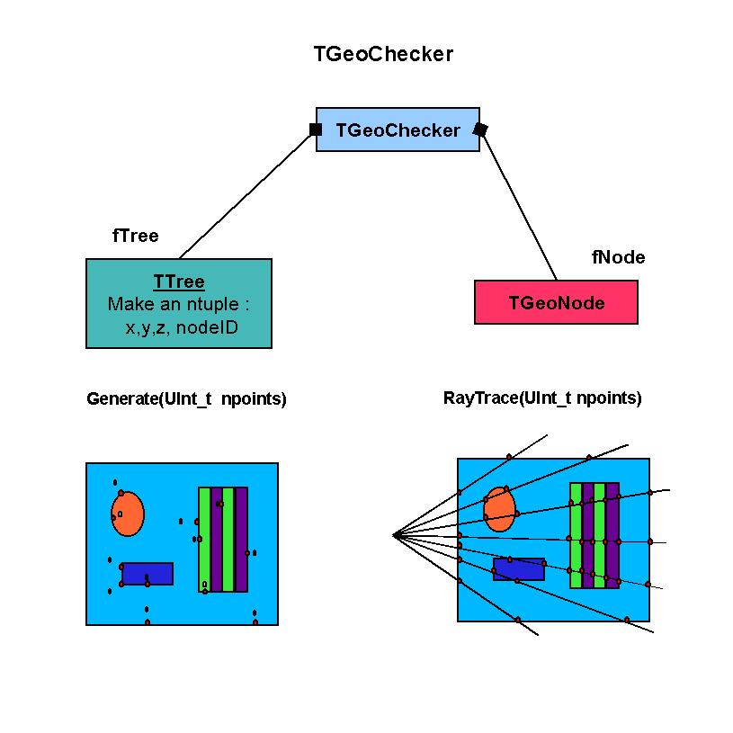
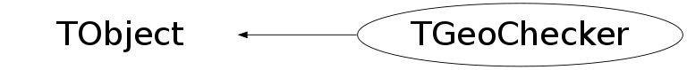

class TGeoChecker: public TObject
TGeoChecker - Geometry checking package. TGeoChecker class provides several geometry checking methods. There are two types of tests that can be performed. One is based on random sampling or ray-tracing and provides a visual check on how navigation methods work for a given geometry. The second actually checks the validity of the geometry definition in terms of overlapping/extruding objects. Both types of checks can be done for a given branch (starting with a given volume) as well as for the geometry as a whole. 1. TGeoChecker::CheckPoint(Double_t x, Double_t y, Double_t z) This method can be called direcly from the TGeoManager class and print a report on how a given point is classified by the modeller: which is the full path to the deepest node containing it, and the (under)estimation of the distance to the closest boundary (safety). 2. TGeoChecker::RandomPoints(Int_t npoints) Can be called from TGeoVolume class. It first draws the volume and its content with the current visualization settings. Then randomly samples points in its bounding box, plotting in the geometry display only the points classified as belonging to visible volumes. 3. TGeoChecker::RandomRays(Int_t nrays, Double_t startx, starty, startz) Can be called and acts in the same way as the previous, but instead of points, rays having random isotropic directions are generated from the given point. A raytracing algorithm propagates all rays untill they exit geometry, plotting all segments crossing visible nodes in the same color as these. 4. TGeoChecker::Test(Int_t npoints) Implementation of TGeoManager::Test(). Computes the time for the modeller to find out "Where am I?" for a given number of random points. 5. TGeoChecker::LegoPlot(ntheta, themin, themax, nphi, phimin, phimax,...) Implementation of TGeoVolume::LegoPlot(). Draws a spherical radiation length lego plot for a given volume, in a given theta/phi range. 6. TGeoChecker::Weigth(Double_t precision) Implementation of TGeoVolume::Weigth(). Estimates the total weigth of a given volume by matrial sampling. Accepts as input the desired precision. Overlap checker/*  */
Function Members (Methods)
public:
| TGeoChecker() | |
| TGeoChecker(TGeoManager* geom) | |
| TGeoChecker(const TGeoChecker&) | |
| virtual | ~TGeoChecker() |
| void | TObject::AbstractMethod(const char* method) const |
| virtual void | TObject::AppendPad(Option_t* option = "") |
| virtual void | TObject::Browse(TBrowser* b) |
| virtual void | CheckBoundaryErrors(Int_t ntracks = 1000000, Double_t radius = -1.) |
| virtual void | CheckBoundaryReference(Int_t icheck = -1) |
| void | CheckGeometry(Int_t nrays, Double_t startx, Double_t starty, Double_t startz) const |
| void | CheckGeometryFull(Bool_t checkoverlaps = kTRUE, Bool_t checkcrossings = kTRUE, Int_t nrays = 10000, const Double_t* vertex = NULL) |
| void | CheckOverlaps(const TGeoVolume* vol, Double_t ovlp = 0.1, Option_t* option = "") |
| void | CheckOverlapsBySampling(TGeoVolume* vol, Double_t ovlp = 0.1, Int_t npoints = 1000000) const |
| void | CheckPoint(Double_t x = 0, Double_t y = 0, Double_t z = 0, Option_t* option = "") |
| void | CheckShape(TGeoShape* shape, Int_t testNo, Int_t nsamples, Option_t* option) |
| Double_t | CheckVoxels(TGeoVolume* vol, TGeoVoxelFinder* voxels, Double_t* xyz, Int_t npoints) |
| static TClass* | Class() |
| virtual const char* | TObject::ClassName() const |
| virtual void | TObject::Clear(Option_t* = "") |
| virtual TObject* | TObject::Clone(const char* newname = "") const |
| virtual Int_t | TObject::Compare(const TObject* obj) const |
| virtual void | TObject::Copy(TObject& object) const |
| virtual void | TObject::Delete(Option_t* option = "")MENU |
| virtual Int_t | TObject::DistancetoPrimitive(Int_t px, Int_t py) |
| virtual void | TObject::Draw(Option_t* option = "") |
| virtual void | TObject::DrawClass() constMENU |
| virtual TObject* | TObject::DrawClone(Option_t* option = "") constMENU |
| virtual void | TObject::Dump() constMENU |
| virtual void | TObject::Error(const char* method, const char* msgfmt) const |
| virtual void | TObject::Execute(const char* method, const char* params, Int_t* error = 0) |
| virtual void | TObject::Execute(TMethod* method, TObjArray* params, Int_t* error = 0) |
| virtual void | TObject::ExecuteEvent(Int_t event, Int_t px, Int_t py) |
| virtual void | TObject::Fatal(const char* method, const char* msgfmt) const |
| virtual TObject* | TObject::FindObject(const char* name) const |
| virtual TObject* | TObject::FindObject(const TObject* obj) const |
| virtual Option_t* | TObject::GetDrawOption() const |
| static Long_t | TObject::GetDtorOnly() |
| virtual const char* | TObject::GetIconName() const |
| virtual const char* | TObject::GetName() const |
| virtual char* | TObject::GetObjectInfo(Int_t px, Int_t py) const |
| static Bool_t | TObject::GetObjectStat() |
| virtual Option_t* | TObject::GetOption() const |
| virtual const char* | TObject::GetTitle() const |
| virtual UInt_t | TObject::GetUniqueID() const |
| virtual Bool_t | TObject::HandleTimer(TTimer* timer) |
| virtual ULong_t | TObject::Hash() const |
| virtual void | TObject::Info(const char* method, const char* msgfmt) const |
| virtual Bool_t | TObject::InheritsFrom(const char* classname) const |
| virtual Bool_t | TObject::InheritsFrom(const TClass* cl) const |
| virtual void | TObject::Inspect() constMENU |
| void | TObject::InvertBit(UInt_t f) |
| virtual TClass* | IsA() const |
| virtual Bool_t | TObject::IsEqual(const TObject* obj) const |
| virtual Bool_t | TObject::IsFolder() const |
| Bool_t | TObject::IsOnHeap() const |
| virtual Bool_t | TObject::IsSortable() const |
| Bool_t | TObject::IsZombie() const |
| TH2F* | LegoPlot(Int_t ntheta = 60, Double_t themin = 0., Double_t themax = 180., Int_t nphi = 90, Double_t phimin = 0., Double_t phimax = 360., Double_t rmin = 0., Double_t rmax = 9999999, Option_t* option = "") |
| virtual void | TObject::ls(Option_t* option = "") const |
| TGeoOverlap* | MakeCheckOverlap(const char* name, TGeoVolume* vol1, TGeoVolume* vol2, TGeoMatrix* mat1, TGeoMatrix* mat2, Bool_t isovlp, Double_t ovlp) |
| void | TObject::MayNotUse(const char* method) const |
| virtual Bool_t | TObject::Notify() |
| void | TObject::Obsolete(const char* method, const char* asOfVers, const char* removedFromVers) const |
| static void | TObject::operator delete(void* ptr) |
| static void | TObject::operator delete(void* ptr, void* vp) |
| static void | TObject::operator delete[](void* ptr) |
| static void | TObject::operator delete[](void* ptr, void* vp) |
| void* | TObject::operator new(size_t sz) |
| void* | TObject::operator new(size_t sz, void* vp) |
| void* | TObject::operator new[](size_t sz) |
| void* | TObject::operator new[](size_t sz, void* vp) |
| TGeoChecker& | operator=(const TGeoChecker&) |
| void | OpProgress(const char* opname, Long64_t current, Long64_t size, TStopwatch* watch = 0, Bool_t last = kFALSE, Bool_t refresh = kFALSE) |
| virtual void | TObject::Paint(Option_t* option = "") |
| virtual void | TObject::Pop() |
| virtual void | TObject::Print(Option_t* option = "") const |
| void | PrintOverlaps() const |
| void | RandomPoints(TGeoVolume* vol, Int_t npoints, Option_t* option) |
| void | RandomRays(Int_t nrays, Double_t startx, Double_t starty, Double_t startz) |
| virtual Int_t | TObject::Read(const char* name) |
| virtual void | TObject::RecursiveRemove(TObject* obj) |
| void | TObject::ResetBit(UInt_t f) |
| TGeoNode* | SamplePoints(Int_t npoints, Double_t& dist, Double_t epsil, const char* g3path) |
| virtual void | TObject::SaveAs(const char* filename = "", Option_t* option = "") constMENU |
| virtual void | TObject::SavePrimitive(ostream& out, Option_t* option = "") |
| void | TObject::SetBit(UInt_t f) |
| void | TObject::SetBit(UInt_t f, Bool_t set) |
| virtual void | TObject::SetDrawOption(Option_t* option = "")MENU |
| static void | TObject::SetDtorOnly(void* obj) |
| void | SetNmeshPoints(Int_t npoints = 1000) |
| static void | TObject::SetObjectStat(Bool_t stat) |
| void | SetSelectedNode(TGeoNode* node) |
| virtual void | TObject::SetUniqueID(UInt_t uid) |
| void | ShapeDistances(TGeoShape* shape, Int_t nsamples, Option_t* option) |
| void | ShapeNormal(TGeoShape* shape, Int_t nsamples, Option_t* option) |
| void | ShapeSafety(TGeoShape* shape, Int_t nsamples, Option_t* option) |
| Double_t* | ShootRay(Double_t* start, Double_t dirx, Double_t diry, Double_t dirz, Double_t* array, Int_t& nelem, Int_t& dim, Double_t* enpoint = 0) const |
| virtual void | ShowMembers(TMemberInspector& insp) |
| virtual void | Streamer(TBuffer& b) |
| void | StreamerNVirtual(TBuffer& b) |
| virtual void | TObject::SysError(const char* method, const char* msgfmt) const |
| void | Test(Int_t npoints, Option_t* option) |
| Bool_t | TObject::TestBit(UInt_t f) const |
| Int_t | TObject::TestBits(UInt_t f) const |
| void | TestOverlaps(const char* path) |
| Bool_t | TestVoxels(TGeoVolume* vol, Int_t npoints = 1000000) |
| virtual void | TObject::UseCurrentStyle() |
| virtual void | TObject::Warning(const char* method, const char* msgfmt) const |
| Double_t | Weight(Double_t precision = 0.01, Option_t* option = "v") |
| virtual Int_t | TObject::Write(const char* name = 0, Int_t option = 0, Int_t bufsize = 0) |
| virtual Int_t | TObject::Write(const char* name = 0, Int_t option = 0, Int_t bufsize = 0) const |
protected:
| virtual void | TObject::DoError(int level, const char* location, const char* fmt, va_list va) const |
| void | TObject::MakeZombie() |
private:
| void | CleanPoints(Double_t* points, Int_t& numPoints) const |
| Int_t | NChecksPerVolume(TGeoVolume* vol) |
| Int_t | PropagateInGeom(Double_t*, Double_t*) |
| void | Score(TGeoVolume*, Int_t, Double_t) |
| Double_t | TimingPerVolume(TGeoVolume*) |
Data Members
public:
| enum TObject::EStatusBits { | kCanDelete | |
| kMustCleanup | ||
| kObjInCanvas | ||
| kIsReferenced | ||
| kHasUUID | ||
| kCannotPick | ||
| kNoContextMenu | ||
| kInvalidObject | ||
| }; | ||
| enum TObject::[unnamed] { | kIsOnHeap | |
| kNotDeleted | ||
| kZombie | ||
| kBitMask | ||
| kSingleKey | ||
| kOverwrite | ||
| kWriteDelete | ||
| }; |
private:
| TBuffer3D* | fBuff1 | Buffer containing mesh vertices for first volume |
| TBuffer3D* | fBuff2 | Buffer containing mesh vertices for second volume |
| Bool_t* | fFlags | ! Array of flags per volume. |
| Bool_t | fFullCheck | Full overlap checking |
| TGeoManager* | fGeoManager | pointer to geometry manager |
| Int_t | fNchecks | ! Number of checks for current volume |
| Int_t | fNmeshPoints | ! Number of points on mesh to be checked |
| TGeoNode* | fSelectedNode | ! Selected node for overlap checking |
| TStopwatch* | fTimer | ! Timer |
| Double_t* | fVal1 | ! Array of number of crossings per volume. |
| Double_t* | fVal2 | ! Array of timing per volume. |
| TGeoVolume* | fVsafe | volume to which a safety sphere node was added |
Class Charts
{kind=link}
{kind=link}
{kind=link}
{kind=link}

Function documentation
void OpProgress(const char* opname, Long64_t current, Long64_t size, TStopwatch* watch = 0, Bool_t last = kFALSE, Bool_t refresh = kFALSE)
Print current operation progress.
void CheckBoundaryErrors(Int_t ntracks = 1000000, Double_t radius = -1.)
Check pushes and pulls needed to cross the next boundary with respect to the position given by FindNextBoundary. If radius is not mentioned the full bounding box will be sampled.
void CheckBoundaryReference(Int_t icheck = -1)
Check the boundary errors reference file created by CheckBoundaryErrors method. The shape for which the crossing failed is drawn with the starting point in red and the extrapolated point to boundary (+/- failing push/pull) in yellow.
void CheckGeometryFull(Bool_t checkoverlaps = kTRUE, Bool_t checkcrossings = kTRUE, Int_t nrays = 10000, const Double_t* vertex = NULL)
Geometry checking. Opional overlap checkings (by sampling and by mesh). Optional boundary crossing check + timing per volume. STAGE 1: extensive overlap checking by sampling per volume. Stdout need to be checked by user to get report, then TGeoVolume::CheckOverlaps(0.01, "s") can be called for the suspicious volumes. STAGE2 : normal overlap checking using the shapes mesh - fills the list of overlaps. STAGE3 : shooting NRAYS rays from VERTEX and counting the total number of crossings per volume (rays propagated from boundary to boundary until geometry exit). Timing computed and results stored in a histo. STAGE4 : shooting 1 mil. random rays inside EACH volume and calling FindNextBoundary() + Safety() for each call. The timing is normalized by the number of crossings computed at stage 2 and presented as percentage. One can get a picture on which are the most "burned" volumes during transportation from geometry point of view. Another plot of the timing per volume vs. number of daughters is produced. All histos are saved in the file statistics.root
Int_t PropagateInGeom(Double_t* , Double_t* )
Propagate from START along DIR from boundary to boundary until exiting geometry. Fill array of hits.
void SetNmeshPoints(Int_t npoints = 1000)
Set number of points to be generated on the shape outline when checking for overlaps.
Double_t TimingPerVolume(TGeoVolume* )
Compute timing per "FindNextBoundary" + "Safety" call. Volume must be in the current path.
void CheckGeometry(Int_t nrays, Double_t startx, Double_t starty, Double_t startz) const
Shoot nrays with random directions from starting point (startx, starty, startz) in the reference frame of this volume. Track each ray until exiting geometry, then shoot backwards from exiting point and compare boundary crossing points.
void CleanPoints(Double_t* points, Int_t& numPoints) const
Clean-up the mesh of pcon/pgon from useless points
TGeoOverlap * MakeCheckOverlap(const char* name, TGeoVolume* vol1, TGeoVolume* vol2, TGeoMatrix* mat1, TGeoMatrix* mat2, Bool_t isovlp, Double_t ovlp)
Check if the 2 non-assembly volume candidates overlap/extrude. Returns overlap object.
void CheckOverlapsBySampling(TGeoVolume* vol, Double_t ovlp = 0.1, Int_t npoints = 1000000) const
Check illegal overlaps for volume VOL within a limit OVLP by sampling npoints inside the volume shape.
void CheckOverlaps(const TGeoVolume* vol, Double_t ovlp = 0.1, Option_t* option = "")
Check illegal overlaps for volume VOL within a limit OVLP.
void CheckPoint(Double_t x = 0, Double_t y = 0, Double_t z = 0, Option_t* option = "")
--- Draw point (x,y,z) over the picture of the daughers of the volume containing this point. Generates a report regarding the path to the node containing this point and the distance to the closest boundary.
void CheckShape(TGeoShape* shape, Int_t testNo, Int_t nsamples, Option_t* option)
Test for shape navigation methods. Summary for test numbers: 1: DistFromInside/Outside. Sample points inside the shape. Generate directions randomly in cos(theta). Compute DistFromInside and move the point with bigger distance. Compute DistFromOutside back from new point. Plot d-(d1+d2) 2: Safety test. Sample points inside the bounding and compute safety. Generate directions randomly in cos(theta) and compute distance to boundary. Check if Distance to boundary is bigger than safety
void ShapeDistances(TGeoShape* shape, Int_t nsamples, Option_t* option)
Test TGeoShape::DistFromInside/Outside. Sample points inside the shape. Generate directions randomly in cos(theta). Compute d1 = DistFromInside and move the point on the boundary. Compute DistFromOutside and propagate with d2 making sure that the shape is not re-entered. Swap direction and call DistFromOutside that should fall back on the same point on the boundary (at d2). Propagate back on boundary then compute DistFromInside that should be bigger than d1. Plot d-(d1+d2)
void ShapeSafety(TGeoShape* shape, Int_t nsamples, Option_t* option)
Check of validity of safe distance for a given shape. Sample points inside the 2x bounding box and compute safety. Generate directions randomly in cos(theta) and compute distance to boundary. Check if distance to boundary is bigger than safety.
void ShapeNormal(TGeoShape* shape, Int_t nsamples, Option_t* option)
Check of validity of the normal for a given shape. Sample points inside the shape. Generate directions randomly in cos(theta) and propagate to boundary. Compute normal and safety at crossing point, plot the point and generate a random direction so that (dir) dot (norm) <0.
TH2F * LegoPlot(Int_t ntheta = 60, Double_t themin = 0., Double_t themax = 180., Int_t nphi = 90, Double_t phimin = 0., Double_t phimax = 360., Double_t rmin = 0., Double_t rmax = 9999999, Option_t* option = "")
Generate a lego plot fot the top volume, according to option.
void RandomPoints(TGeoVolume* vol, Int_t npoints, Option_t* option)
Draw random points in the bounding box of a volume.
void RandomRays(Int_t nrays, Double_t startx, Double_t starty, Double_t startz)
Randomly shoot nrays from point (startx,starty,startz) and plot intersections with surfaces for current top node.
TGeoNode * SamplePoints(Int_t npoints, Double_t& dist, Double_t epsil, const char* g3path)
shoot npoints randomly in a box of 1E-5 arround current point. return minimum distance to points outside make sure that path to current node is updated get the response of tgeo
Double_t * ShootRay(Double_t* start, Double_t dirx, Double_t diry, Double_t dirz, Double_t* array, Int_t& nelem, Int_t& dim, Double_t* enpoint = 0) const
Shoot one ray from start point with direction (dirx,diry,dirz). Fills input array with points just after boundary crossings. Int_t array_dimension = 3*dim;
Double_t Weight(Double_t precision = 0.01, Option_t* option = "v")
Estimate weight of top level volume with a precision SIGMA(W)/W
better than PRECISION. Option can be "v" - verbose (default).
Double_t CheckVoxels(TGeoVolume* vol, TGeoVoxelFinder* voxels, Double_t* xyz, Int_t npoints)
count voxel timing
Bool_t TestVoxels(TGeoVolume* vol, Int_t npoints = 1000000)